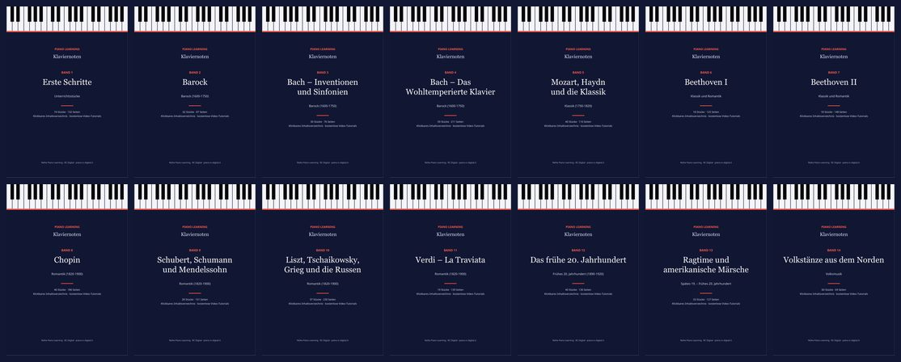
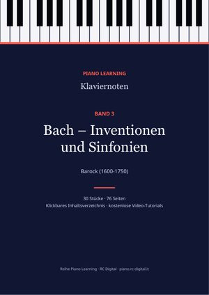
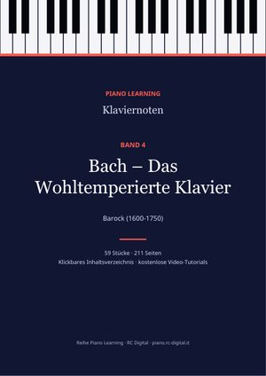
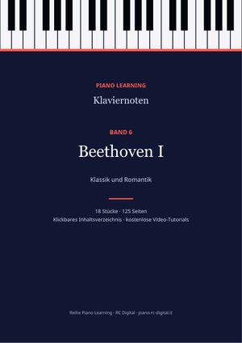
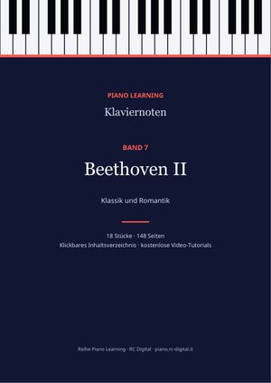
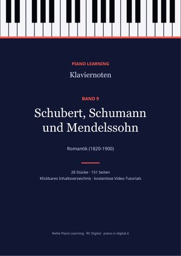
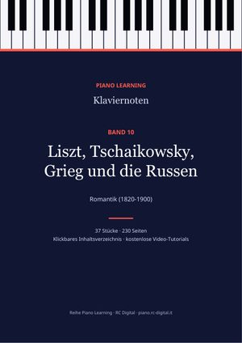
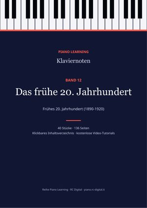
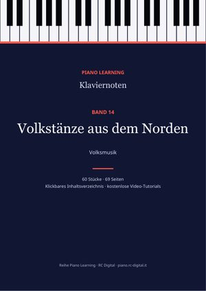

Band 15Weihnachtslieder und leichte Melodien41 Stücke · 54 Seiten
Band 15Weihnachtslieder und leichte Melodien41 Stücke · 54 Seiten3,99 €Kaufen
Piano Learning · PDF
564 Stücke · 1.933 Notenseiten · 14 Bände · 10 Sprachen

Alle 14 Bände: 564 Stücke, 1.933 Notenseiten.
55,86 €19,99 €−64%
Band 15Weihnachtslieder und leichte Melodien41 Stücke · 54 Seiten Band 1Erste Schritte74 Stücke · 132 Seiten
Band 1Erste Schritte74 Stücke · 132 Seiten Band 2Barock62 Stücke · 87 Seiten
Band 2Barock62 Stücke · 87 Seiten
Band 3Bach – Inventionen und Sinfonien30 Stücke · 76 Seiten
Band 4Bach – Das Wohltemperierte Klavier59 Stücke · 211 Seiten Band 5Mozart, Haydn und die Klassik40 Stücke · 116 Seiten
Band 5Mozart, Haydn und die Klassik40 Stücke · 116 Seiten
Band 6Beethoven I18 Stücke · 125 Seiten
Band 7Beethoven II18 Stücke · 148 Seiten Band 8Chopin46 Stücke · 186 Seiten
Band 8Chopin46 Stücke · 186 Seiten
Band 9Schubert, Schumann und Mendelssohn28 Stücke · 151 Seiten
Band 10Liszt, Tschaikowsky, Grieg und die Russen37 Stücke · 230 Seiten Band 11Verdi – La Traviata19 Stücke · 139 Seiten
Band 11Verdi – La Traviata19 Stücke · 139 Seiten
Band 12Das frühe 20. Jahrhundert40 Stücke · 136 Seiten Band 13Ragtime und amerikanische Märsche33 Stücke · 127 Seiten
Band 13Ragtime und amerikanische Märsche33 Stücke · 127 Seiten
Band 14Volkstänze aus dem Norden60 Stücke · 69 SeitenTippe im Inhaltsverzeichnis auf einen Titel und du bist auf der richtigen Seite. Lesezeichen sind auch dabei.
Ein paar Zeilen darüber, wer die Musik geschrieben hat, die du gerade spielst.
Von den Noten zum Video mit fallenden Noten, bei jedem Stück, das eines hat.
Mit einem Kauf lädst du die Ausgabe in der Sprache herunter, die dir am liebsten ist.
Die erste Seite von vier Stücken aus der Reihe. Tippe auf eine Seite, um das Stück zu öffnen.
Als PDF. Du kannst sie auf Computer, Tablet und Handy öffnen und ausdrucken. Jeder Band ist eine einzige Datei mit klickbarem Inhaltsverzeichnis und Lesezeichen.
Jeder Kauf enthält die Ausgabe in 10 Sprachen: Italienisch, Englisch, Deutsch, Spanisch, Französisch, Portugiesisch, Russisch, Chinesisch, Japanisch und Koreanisch. Du lädst die herunter, die dir am liebsten ist.
Direkt nach der Zahlung öffnet sich die Download-Seite und du erhältst eine E-Mail mit dem Link. Jeder Einzelband ist ein PDF; die komplette Reihe ist eine ZIP-Datei pro Sprache mit den 14 PDFs (etwa 50 MB).
Ja. Es sind freie Ausgaben (gemeinfrei oder Creative Commons), und auf den Seiten dieser Website findest du den kostenlosen Link, Stück für Stück. Mit der Reihe hast du alle nach Komponisten und Epochen geordnet, mit Inhaltsverzeichnis, Biografien, Tutorial-Links und den vollständigen Angaben zu jeder Ausgabe.
Nein. Band 15, „Weihnachtslieder und leichte Melodien“, wird einzeln für 3,99 € verkauft. Die komplette Reihe umfasst die Bände 1 bis 14.
Sichere Zahlung über Payhip und sofortiger Download per E-Mail. Die Noten sind freie Ausgaben (gemeinfrei oder Creative Commons): Du findest sie auch kostenlos, Stück für Stück, auf den Seiten dieser Website; hier hast du sie alle geordnet in einer Datei, mit den vollständigen Angaben zu jeder Ausgabe.